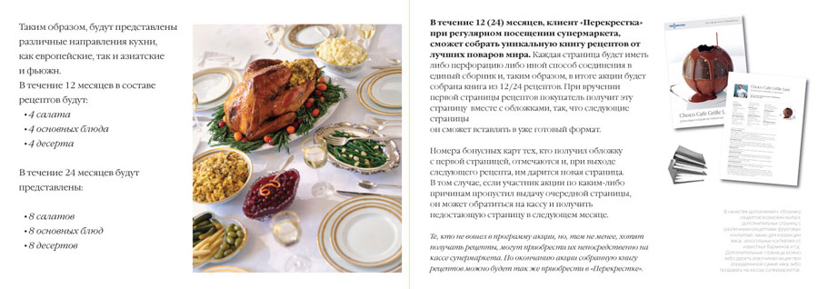

Путешествие за рецептами
Поваренная книга «Путешествие за рецептами» для сети магазинов «Перекресток»
Концепт-проект для сети магазинов «Перекресток». В течение 12/24 месяцев посетители «Перекрестка» смогут собрать уникальную коллекцию рецептов лучших поваров мира. В итоге акции будет собрана книга из 12/24 рецептов (на кассах сети покупатели ежемесячно получают страницу с рецептом, представленным самим шефом или известным поваром одного из знаменитых своей кухней отелей).
